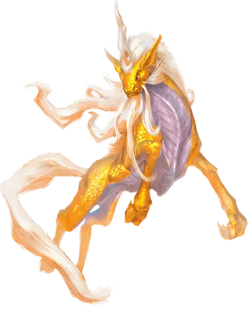

Ки-рин
Ki-rin
Огромный Небожитель, законно-добрый

Класс Доспеха 20 (природный доспех)
Хиты 152 (16к12 + 48)
Скорость 60 футов, летая 120 футов (парит)
| мод | спас | ||
|---|---|---|---|
| СИЛ | 21 | +5 | +5 |
| ЛОВ | 16 | +3 | +3 |
| ТЕЛ | 16 | +3 | +3 |
| мод | спас | ||
|---|---|---|---|
| ИНТ | 19 | +4 | +4 |
| МДР | 20 | +5 | +5 |
| ХАР | 20 | +5 | +5 |
Навыки Восприятие +9, Проницательность +9, Религия +8
Иммунитет к урону яд
Иммунитет к состояниям отравление
Чувства слепое зрение 30 футов, тёмное зрение 120 футов, пассивное Восприятие 19
Языки Все, Телепатия 120 фт.
Опасность 12 (8400 опыта)
Бонус мастерства +4
Среда обитания Горы, Луг, Побережье, Пустыня
Особенности
Телепатия. 120 футов.
Врождённое колдовство. . Базовой характеристикой ки–рина является Харизма (Сл спасброска от заклинаний 17). Ки–рин может колдовать следующие заклинания без использования материальных компонентов:
• Неограниченно: газообразная форма [gaseous form], образ [major image] (вариант 6-го уровень), хождение по ветру [wind walk].
• 1/день: сотворение пищи и воды [create food and water].
Легендарное сопротивление (3/день). . Если ки–рин проваливает спасбросок, то он вместо этого может выбрать успех.
Магическое сопротивление. . Ки–рин имеет преимущество на спасброски от заклинаний и других магических эффектов.
Магическое оружие. . Атаки ки–рина оружием считаются магическими.
Использование заклинаний. . Ки–рин является заклинателем 18-го уровня. Базовой характеристикой является Мудрость (Сл спасброска от заклинаний 17, +9 к попаданию заклинаниями). У него подготовлены следующие заклинания жреца:
• Заговоры (неограниченно): свет [light], починка [mending], священное пламя [sacred flame], уход за умирающим [spare the dying], чудотворство [thaumaturgy].
• 1 уровень (4 ячейки): приказ [command], лечение ран [cure wounds], обнаружение зла и добра [detect evil and good], защита от зла и добра [protection from evil and good], убежище [sanctuary].
• 2 уровень (3 ячейки): умиротворение [calm emotions], малое восстановление [lesser restoration], тишина [silence].
• 3 уровень (3 ячейки): рассеивание магии [dispel magic], снятие проклятья [remove curse], послание [sending].
• 4 уровень (3 ячейки): изгнание [banishment], свобода перемещения [freedom of movement], страж веры [guardian of faith].
• 5 уровень (3 ячейки): высшее восстановление [greater restoration], множественное лечение ран [mass cure wounds], наблюдение [scrying].
• 6 уровень (1 ячейка): пир героев [heroes’ feast], истинное зрение [true seeing].
• 7 уровень (1 ячейка): эфирность [etherealness], уход в иной мир [plane shift].
• 8 уровень (1 ячейка): власть над погодой [control weather].
• 9 уровень (1 ячейка): истинное воскрешение [true resurrection].
Действия
Мультиатака. Ки–рин совершает три атаки: две копытами и одну рогом.
Копыто. . Рукопашная атака оружием: +9 к попаданию, досягаемость 15 футов, одна цель. Попадание: 10 (2к4 + 5) дробящего урона.
Рог. . Рукопашная атака оружием: +9 к попаданию, досягаемость 5 футов, одна цель. Попадание: 14 (2к8 + 5) колющего урона.
Легендарные действия
Ки–рин может предпринять 3 легендарных действия, выбрав из вариантов ниже. Можно использовать только одно легендарное действие за один раз и только в конце хода другого существа. Ки–рин восстанавливает потраченные легендарные действия в начале своего хода.
Обнаружение. Ки–рин совершает проверку Мудрости (Восприятие) или Мудрости (Проницательность).
Кара. Ки–рин совершает атаку копытом или накладывает священное пламя [sacred flame].
Передвижение. Ки–рин перемещается на расстояние до половины его скорости, не вызывая атак по возможности.
Логово
На небесных планах, ки–рины живут в величественных, элегантных гнездах, наполненных объектами роскоши. В мире ки–рин выбирает схожее место, такое как вершина горы или внутри облака, которое делает твердым магия ки–рина. Снаружи логово кирина неотличимо от естественной местности, а вход тяжело найти и до него тяжело добраться посетителям. Внутри же, логово – это безмятежное и комфортное место, атмосфера в нем – что–то среднее между дворцом и храмом. Если ки–рин берет себе существ в услужение, то логово становится вдвойне священным, так как здесь ки–рин не только отдыхает, но и учит святым тайнам.
Внутри логова ки–рин может вызывать предметы до трех раз в день, используя одну из трех версий этой силы по одному разу. Одна версия навсегда создает достаточно объектов из мягкого, растительного материала, включая изготовленные объекты, такие как ткани, подушки, нитки, одеяла и одежда, чтобы полностью заполнить куб со стороной 20 футов. Вторая версия навсегда создает достаточно объектов из дерева или похожего по твердости материала, чтобы заполнить куб со стороной 10 футов. Третья версия создает достаточно объектов из камня или металла, чтобы заполнить куб со стороной 2 фута, но любые материалы, созданные таким образом, пропадают через 1 час.
Местные эффекты
Божественная природа ки–рина трансформирует область вокруг его логова. Любые из следующих магических эффектов путешественники могут встретить в окрестностях:
• Потоки воды очищаются в 3 милях от логова ки–рина. Любая возможная порча воды длится не долее 3 минут.
• Растения, животные и все добрые существа в радиусе 3 миль от логова ки–рина получают энергию и эволюционируют в сторону идеализированной формы. Такие существа редко ведут себя агрессивно по отношению к тем, кто не является обычной добычей. Злые существа не выносят святой атмосферы в той же области и обычно селятся гораздо дальше от владений ки–рина.
• Проклятия, болезни и яды, действующие на существ с добрым мировоззрением подавляются, когда существа находятся не далее чем в 3 милях от логова.
• Ки–рин может колдовать власть над погодой [control weather] пока находится не далее 3 миль от логова. Точка применения всегда находится снаружи логова ближе всего к центру логова. Ки–рину не нужно сохранять небо в поле зрения или концентрироваться на сохранении изменения погоды.
• Не далее 3 миль от логова, ветра останавливают не злых существ, которые падают без воздействия ки–рина и его союзников. Такие существа падают со скоростью 60 футов в раунд и не получают урона от падения.
Когда ки–рин умирает, все эти эффекты исчезают незамедлительно, хотя эффект энергии на флору и фауну действует ещё 3 года.
Описание
При виде моего первого ки–рина я был восхищен до слез, я встретил бога.
– Воло
Ки–рины – это благородные, небесные существа. Во Внешних Планах, ки–рины на службе доброжелательных божеств принимают прямое участие в вечной борьбе между добром и злом. В мире смертных ки–рин широко известен как предвестник судьбы, стражник святых и противопоставление силам зла.
Воплощение Добра. Ки–рин – воплощение добра и просто созерцая его наблюдатель может испытать страх или трепет. Обычно ки–рин выглядит как мускулистый олень размером со слона, покрытый золотой чешуей, местами сочетающейся с золотым мехом. У него темно–золотая грива и хвост, медные раздвоенные копыта и спиралевидный медный рог между и над светящимися фиолетовыми глазами. На ветру или в воздухе чешуя существа и его волосы создают впечатление, что ки–рин горит святым, золотым огнём.
Кроме расцветки ки–рины различаются по внешнему виду, в зависимости от божества, которого почитают и функции, которую обычно выполняют на службе у него. Некоторые имеют форму коня и выглядят как гигантские единороги, и часто используются как стражи. У других есть драконьи черты и они обычно агрессивные враги зла. Обычно у них один рог, но ки–рин с яростным поведением может иметь два рога или рога как у большого оленя.
Источник Блага.Обычный народ считает ки–ринов редкими и уединенными вестниками счастья и удачи. Ки–рин, пролетающий над головой, считается благословением, и события, происходящие в такой день, особенно благоприятными. Если ки–рин появляется во время церемонии, такой как объявление о рождении или коронации, то все присутствующие понимают, что существо говорит им о великом благе, которое не за горами. Ки–рин передает свои дары и знамения, а потом уносится обратно в небеса. Ки–рины как известно также появляются на местах великих сражений для вдохновения и усиления стороны добра, или для спасения героев от неминуемой смерти.
Ки–рин занимает в мире территорию, за которой приглядывает, а один ки–рин может охранять область, которая охватывает несколько наций. В других планах ки–рины, которые служат добрым божествам, идут туда куда им прикажут, что может включать перемещение в Материальный План по заданию. Ки–рин последователь обычно служит своему божеству разведчиком, вестником или шпионом.
Ки–рины привлекаются на службу божествам храбрости, верности, бескорыстия и правды, а так же для продвижения справедливых сообществ. Например, в Фаэруне, ки–рины в основном сплочены вокруг Торма, хотя они так же могут служить Тиру и Ильматеру
Объекты Преклонения. Поскольку ки–рин знаменит своей мудростью, другие существа конечно же ищут его, чтобы задать вопросы и изложить свои просьбы. В основном по этой причине он селится на вершине неприступного горного пика или в примерно такой же недоступной местности. Только те, у кого достаточно упорства для пугающего путешествия к логову ки–рина, могут доказать, что они достойны говорить с владельцем жилища.
Многие, кто ищет напутствия ки–рина, в конечном итоге обещают служить существу. Они обучаются как монахи под его руководством и служат его агентами в мире. Последователи ки–рина могут путешествовать по миру, искать новости о растущем зле и работать за кулисами, или могут стать чемпионами по велению своего хозяина, чтобы победить злодеев, где бы они не были.